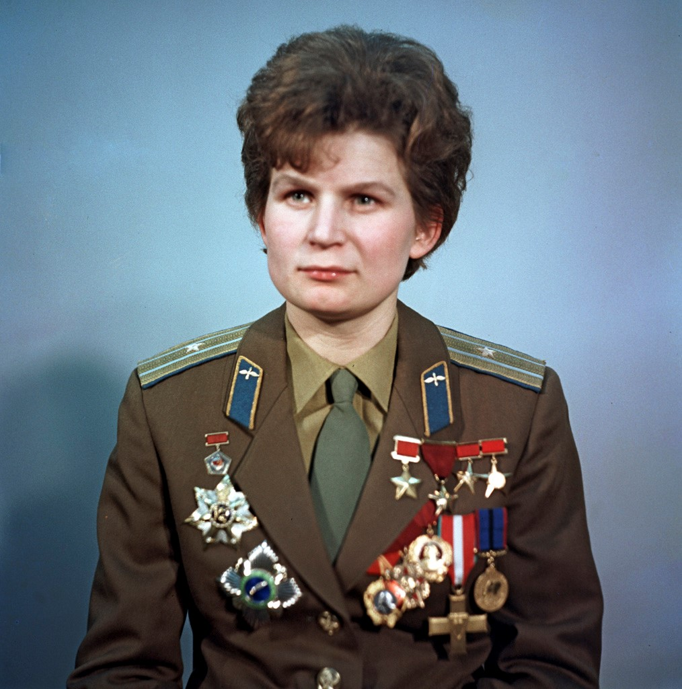
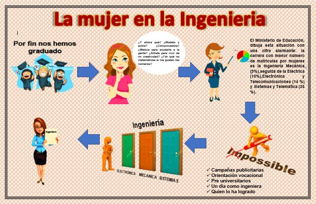
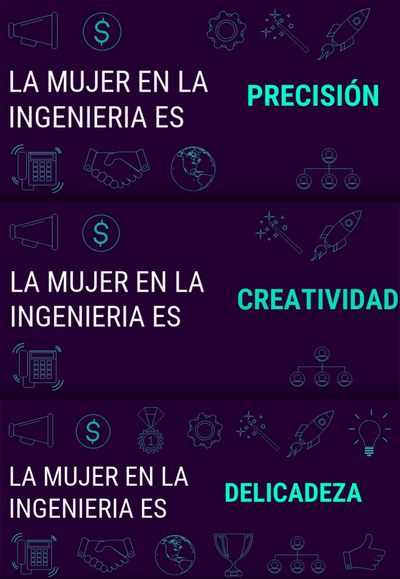
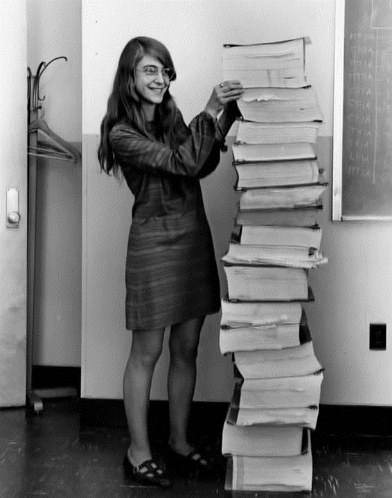
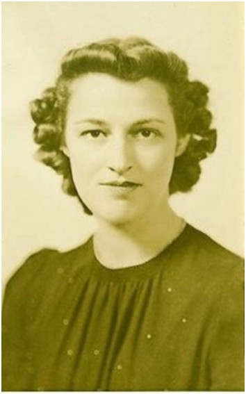

![ Valentina Tereshkova Fue la primera mujer en viajar al espacio en el año de 1963, ninguna otra mujer había seleccionada para un trabajo así y tuvieron que pasar otros 19 años para que otra mujer siguiera sus pasos. Esta mujer es símbolo de inspiración en el mundo de la ingeniería y lo seguirá siendo. Ha sido una fiel representante de su país Rusia, ya que fue escogida dentro de otras cuatrocientas candidatas y tener ese honor. Actualmente representa a su país en varios congresos y programas espaciales, incluso se ha ofrecido para una posible misión a Marte.](images/ingenieras/1.jpg){kind=link}
Fue la primera mujer en viajar al espacio en el año de 1963, ninguna otra mujer había seleccionada para un trabajo así y tuvieron que pasar otros 19 años para que otra mujer siguiera sus pasos. Esta mujer es símbolo de inspiración en el mundo de la ingeniería y lo seguirá siendo. Ha sido una fiel representante de su país Rusia, ya que fue escogida dentro de otras cuatrocientas candidatas y tener ese honor. Actualmente representa a su país en varios congresos y programas espaciales, incluso se ha ofrecido para una posible misión a Marte.
Mujer, ¡únete al gran desarrollo que existe en la ingenieria!
Las mujeres estan participando en un reto constante.El mercado necesita profesionales altamente preparados y capacitados para enfrentarse al cambiante mundo laboral, y TÚ eres capaz.

¿Por qué estudiar ingeniería?
Algunas mujeres que decidieron estudiar Ingeniería comentaron 5 ventajas de su carrera:
• Es la única profesión que te permite cambiar el mundo.
• La oferta laboral para las carreras de ingeniería es mayor.
• Facilidad para analizar de forma estructurada cualquier problema.
• Es una profesión que evoluciona constantemente
• Los conocimientos en ingeniería te permiten hacer aportes a diferentes sectores, como salud, educación, arquitectura, administración.

Casos de éxito
{kind=link}
Fue una famosa inventora norteamericana y es más conocida como ‘La Señora Edison’, por su cantidad de inventos y atribuciones para la década de los años treinta. Dentro de sus inventos se encuentran un congelador de helado al vacío y una máquina de coser sin bobina. Pero hay que recalcar que, a lo largo de su carrera, recibió más de cuarenta y nueve patentes y tuvo alrededor de 110 inventos en total.
![ Margaret Hamilton Esta famosa mujer es una de las pioneras en el mundo de la informática y más como representante femenina de este campo. Gracias a ella se diseñó el código que permitió a Neil Armstrong y Buzz Aldrin en la misión del Apolo 11 pudiera llegar a la Luna. Además, ha sido directora de la División de Ingeniería de Software del Laboratorio de Instrumentación del MIT. Siempre ha estado interesada por los avances en materia científica para misiones espaciales y ha recibido el reconocimiento de su país, Estados Unidos, recibiendo la Medalla Presidencial de la Libertad.](images/ingenieras/2.gif){kind=link}
Esta famosa mujer es una de las pioneras en el mundo de la informática y más como representante femenina de este campo. Gracias a ella se diseñó el código que permitió a Neil Armstrong y Buzz Aldrin en la misión del Apolo 11 pudiera llegar a la Luna. Además, ha sido directora de la División de Ingeniería de Software del Laboratorio de Instrumentación del MIT. Siempre ha estado interesada por los avances en materia científica para misiones espaciales y ha recibido el reconocimiento de su país, Estados Unidos, recibiendo la Medalla Presidencial de la Libertad.
![ Beulah Louse Henry Fue la primera mujer en viajar al espacio en el año de 1963, ninguna otra mujer había seleccionada para un trabajo así y tuvieron que pasar otros 19 años para que otra mujer siguiera sus pasos. Esta mujer es símbolo de inspiración en el mundo de la ingeniería y lo seguirá siendo. Ha sido una fiel representante de su país Rusia, ya que fue escogida dentro de otras cuatrocientas candidatas y tener ese honor. Actualmente representa a su país en varios congresos y programas espaciales, incluso se ha ofrecido para una posible misión a Marte.](images/ingenieras/3.jpg){kind=link}
Fue la primera mujer en viajar al espacio en el año de 1963, ninguna otra mujer había seleccionada para un trabajo así y tuvieron que pasar otros 19 años para que otra mujer siguiera sus pasos. Esta mujer es símbolo de inspiración en el mundo de la ingeniería y lo seguirá siendo. Ha sido una fiel representante de su país Rusia, ya que fue escogida dentro de otras cuatrocientas candidatas y tener ese honor. Actualmente representa a su país en varios congresos y programas espaciales, incluso se ha ofrecido para una posible misión a Marte.